Presentation ¶
There is a five-minute presentation that covers the basics of this plot and data exploration, but this is much more in-depth.
Project Concept ¶
For this project, I’d like to analyze my location data. In the course of tracking us 24/7 to sell us ads based on places we just were, Google keeps high-resolution information about our location on their servers. You can request a download of this (and tons of other data) using Google Takeout. I think taking a look at what data Google has (more specifically, what data Google publicly admits it has) and putting this together in a format that the general public might consume, perhaps browsing through twitter, could get people to think a bit more deeply about how surveilled we are. I am not necessarily advocating for a change in behavior — clearly I value my privacy less than some. But it’s good to make informed decisions, whatever that decision might be!
Data processing and tidying ¶
I downloaded my location data and unzipped it, yielding an almost 1 GB JSON document. Quite large for plain text! Let’s load it and see what’s in there.
This takes…quite some time. When loaded into R’s memory, it’s 2.9 GB.
library(tidyverse)
library(ggplot2)
library(jsonlite)
location_json <- fromJSON('./Takeout/Location History/Location History.json')
> glimpse(location_json)
List of 1
$ locations:'data.frame': 1983695 obs. of 14 variables:
..$ timestampMs : chr [1:1983695] "1301961469499" "1301963940890" "1301964189152" "1301964191127" ...
..$ latitudeE7 : int [1:1983695] 336192880 336192880 336503700 336193410 336192890 336519440 336519440 336192890 336195780 336519440 ...
..$ longitudeE7 : int [1:1983695] -1178402620 -1178402620 -1178256820 -1178401480 -1178402600 -1179043110 -1179043110 -1178402600 -1178398950 -1179043110 ...
..$ accuracy : int [1:1983695] 25 25 995 49 49 1867 1867 49 49 1867 ...
..$ source : chr [1:1983695] "network" "network" "cell" "wifi" ...
..$ activity :List of 1983695
.. ..$ : NULL
.. ..$ : NULL
.. .. [list output truncated]
..$ deviceTag : int [1:1983695] NA NA NA NA NA NA NA NA NA NA ...
..$ platform : chr [1:1983695] NA NA NA NA ...
..$ platformType : chr [1:1983695] NA NA NA NA ...
..$ locationMetadata:List of 1983695
.. ..$ : NULL
.. ..$ : NULL
.. .. [list output truncated]
..$ altitude : int [1:1983695] NA NA NA NA NA NA NA NA NA NA ...
..$ verticalAccuracy: int [1:1983695] NA NA NA NA NA NA NA NA NA NA ...
..$ velocity : int [1:1983695] NA NA NA NA NA NA NA NA NA NA ...
..$ heading : int [1:1983695] NA NA NA NA NA NA NA NA NA NA ...
OK, so it looks like there is really a single table in this JSON document called
locations. It contains:
- a timestamp in Unix time
- latitude
- longitude
- accuracy (in meters? feet? arbitrary accuracy units?)
- the source of this location datum
- an array called “activity”
- device tag
- platform
- platform type
- an array called “locationMetadata”
- altitude
- vertical accuracy
- velocity
- heading
Unfortunately (or perhaps fortunately, if you care about your privacy), everything but timestamp, lat, long, and accuracy appear to be entirely NA or NULL.
Let’s check if any of this data is not NULL
> activity_tibble <- tibble(location = location_json$locations$activity) %>%
unnest(location) %>%
unnest(activity)
> activity_tibble
# A tibble: 2,944,923 x 3
timestampMs type confidence
<chr> <chr> <int>
1 1348124094363 STILL 100
2 1348124189449 STILL 100
3 1348124248936 STILL 100
4 1348124429120 STILL 100
5 1348124609637 STILL 100
6 1348124789818 STILL 100
7 1348125211008 STILL 100
8 1348125391200 STILL 100
9 1348125571406 STILL 100
10 1348125787167 STILL 100
# ... with 2,944,913 more rows
Interesting! So there was valuable data in there, just not displayed in the JSON format. It seems to be twice as long as the main location data…
> tail(activity_tibble)
# A tibble: 6 x 3
timestampMs type confidence
<chr> <chr> <int>
1 1622742065379 ON_FOOT 10
2 1622742065379 STILL 10
3 1622742065379 WALKING 10
4 1622742065379 RUNNING 10
5 1622742065379 IN_ROAD_VEHICLE 10
6 1622742065379 IN_RAIL_VEHICLE 10
Ah, so I would guess that when Google doesn’t know exactly what I’m doing it gives a row to each guess for which it has some confidence.
I wondered if processing other NA or NULL columns would give similar results. To
skip ahead, I found that the NAs truly are no data, whereas the NULLs are
just not representable by jsonlite. So I processed the remaning array of NULLs.
The locationMetadata array gave information about the WiFi access points that were used to determine WiFi
location. Interesting but not really something I can plot. So we can leave that
alone.
I think the mode information might be fun, let’s filter that to rows for which Google is C+ confident that it knows what I’m doing. Then we can join it into the main location table. I’ll save that combined table into a csv for faster loading in the dreaded event I should crash.
Again.
loc_df <- tibble(
'timestamp' = location_json$locations$timestampMs,
'lat' = location_json$locations$latitudeE7,
'lon' = location_json$locations$longitudeE7,
'source' = location_json$locations$source
)
loc_df <- activity_tibble %>%
filter(confidence > 75) %>%
rename ('timestamp' = timestampMs) %>%
right_join(loc_df)
loc_df %>%
write_csv('loc_df.csv')
Exploratory plots ¶
Mode share ¶
Okay, let’s see what’s in here. First, what modes does Google most often think I travel by?
loc_df %>%
filter(!is.na(type)) %>%
ggplot(aes(x = type)) +
theme_minimal() +
geom_bar(color = 'black', fill = 'white', size = 1)
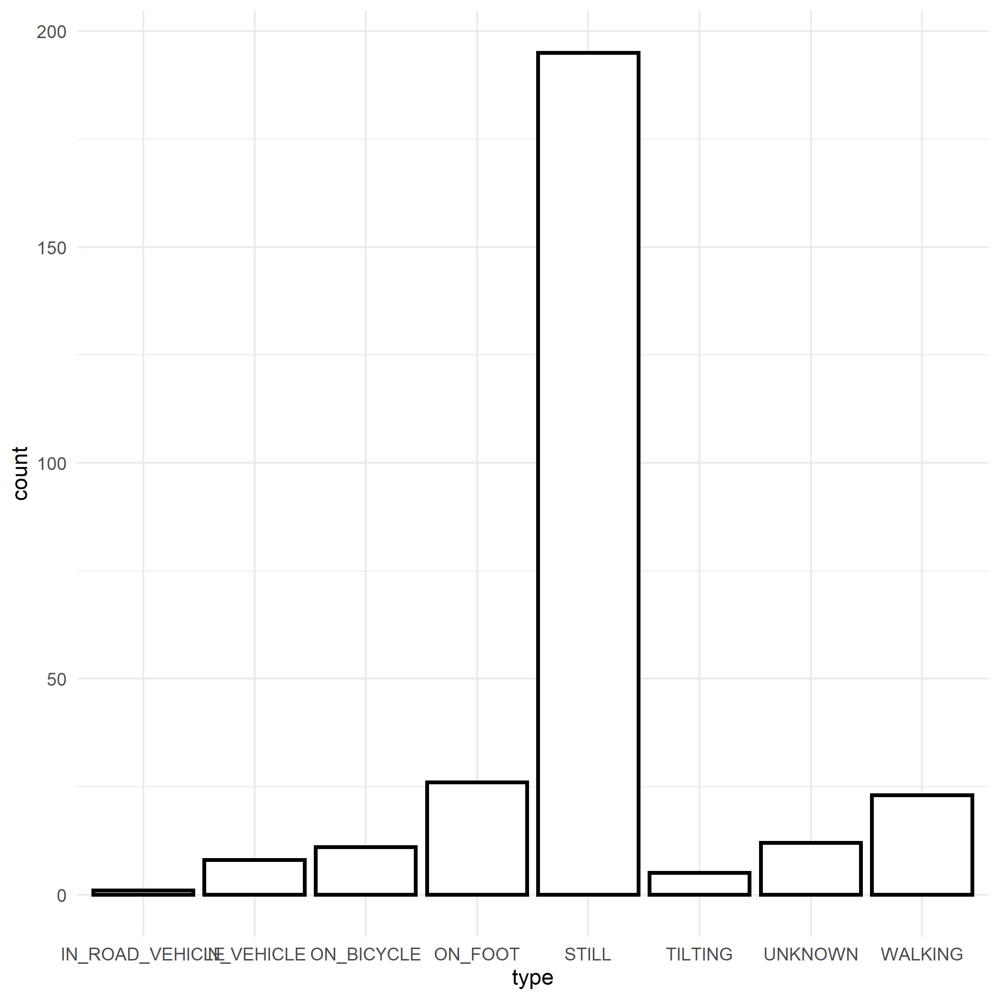
I’m mostly being still, which makes sense. I spend most of my life asleep or in lab.
Let’s filter that out…and also…‘tilting’…
loc_df %>%
filter(!is.na(type) & !(type %in% c('STILL', 'TILTING'))) %>%
ggplot(aes(x = type)) +
theme_minimal() +
geom_bar(color = 'black', fill = 'white', size = 1)
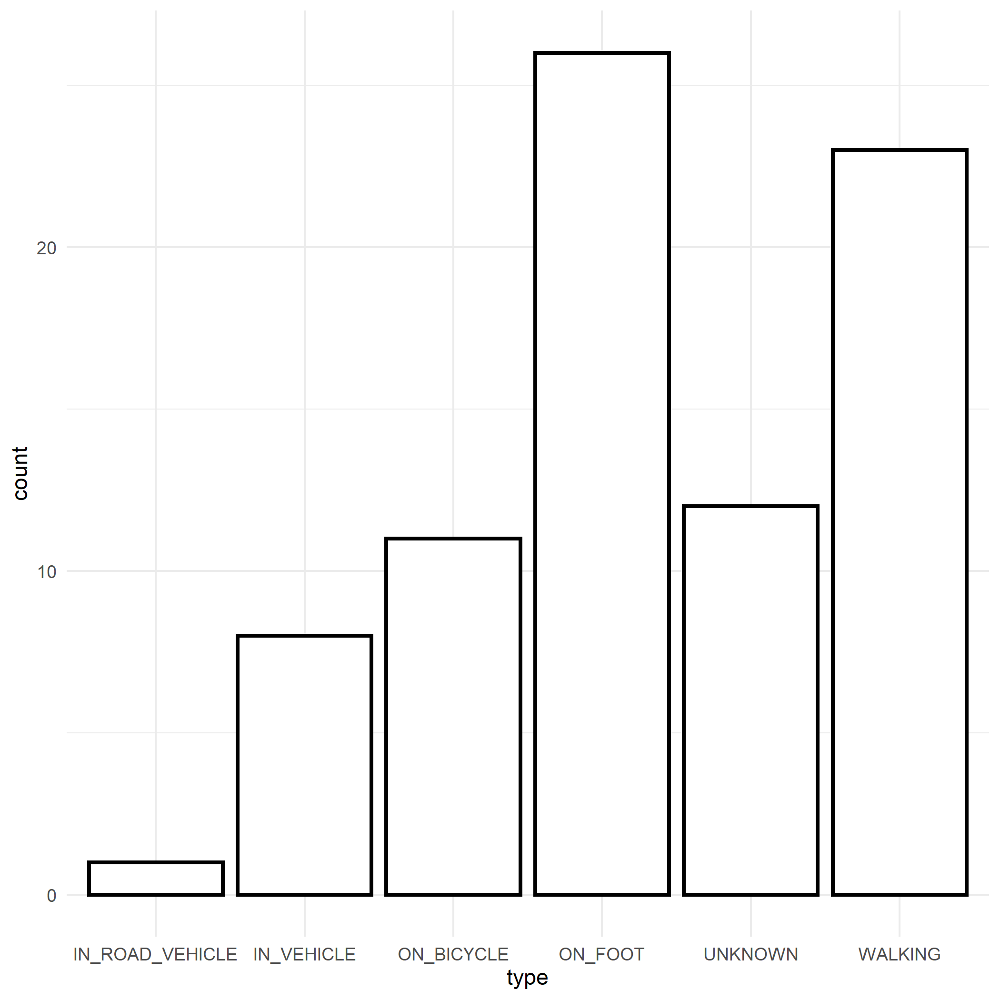
I am not sure what the difference between ON_FOOT and WALKING is, but this seems believable to me, since I don’t own a car. This would include data from back when I owned a car, too. To be able to look at just more recent stuff, let’s deal with those timestamps.
library(lubridate)
loc_df <- loc_df %>%
mutate(timestamp = as_datetime(timestamp/1000)) %>%
mutate(timestamp = with_tz(timestamp, tzone = "America/Los_Angeles"))
loc_df %>%
filter(timestamp > ymd('2018-01-01')) %>%
filter(!is.na(type) & !(type %in% c('STILL', 'TILTING'))) %>%
ggplot(aes(x = type)) +
theme_minimal() +
geom_bar(color = 'black', fill = 'white', size = 1) +
ggtitle('Mode share since 2018')
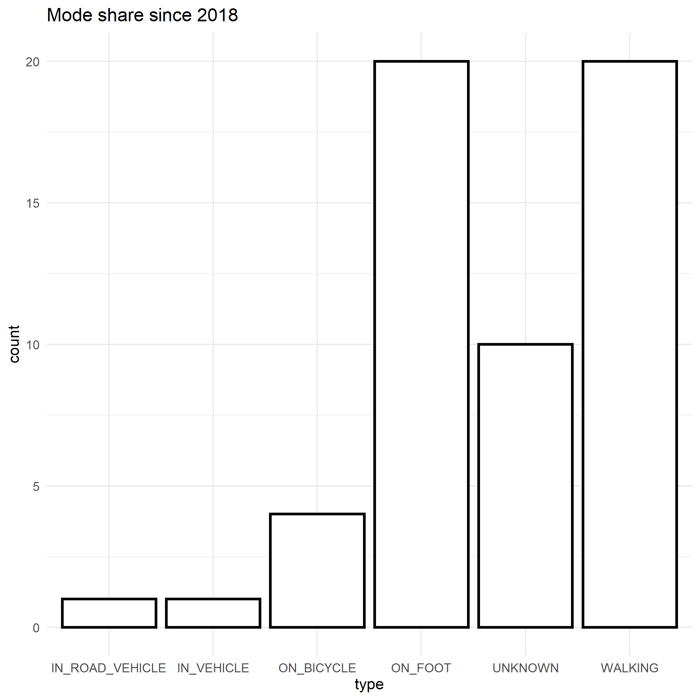
As expected, the share of time spent in motor vehicles goes down.
Sampling rate ¶
It would be nice to be able to think about durations in addition to just samples. The above mode share plots are what I am doing at each sample, which does not necessarily reflect the amount of time that I spend doing those things. If for some reason my phone samples less frequently when, for instance, I’m tracking a bike ride in Strava, that mode will appear to be used less.
Let’s check how many samples there are for any given week. We’d hope this would be a relatively flat line:
loc_df %>%
ggplot(aes(x = timestamp)) +
theme_minimal() +
geom_histogram(bins = 200)
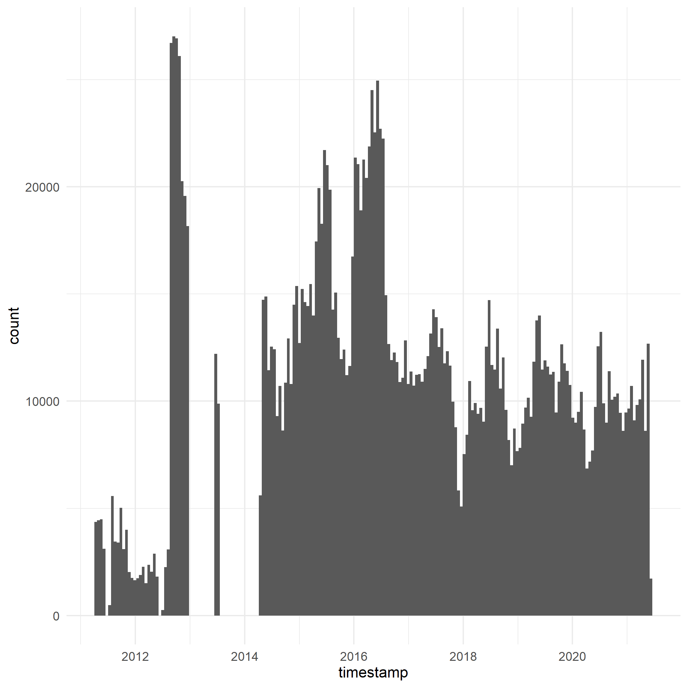
Not at all steady, but it does give you a sense of just how much data Google has! This makes future analyses much more difficult, but I have an idea. If we start considering data from when I graduated college, we’ll miss that huge gap during 2013 (I think I had a very broken phone back then).
loc_df %>%
filter(timestamp > ymd('2015-06-01')) %>%
ggplot(aes(x = timestamp)) +
theme_minimal() +
geom_histogram(bins = 250)
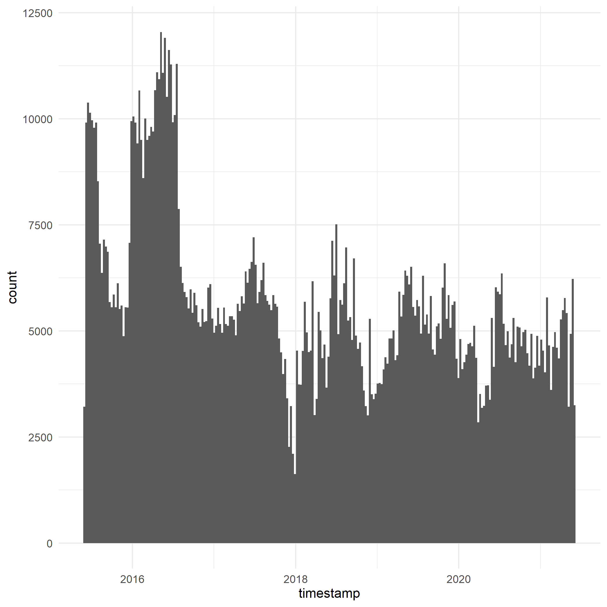
I have picked 250 bins, which is approximately one bin per week. Here we can see that there is a slight cyclic nature to the sampling rate, and that for whatever reason 2016 had a much higher rate. In any case, I wonder what is the longest and shortest duration between samples. If this is acceptably low, we can attach a duration to each sample, over which we could assume I’m doing whatever activity.
loc_df <- loc_df %>%
filter(timestamp > ymd('2015-06-01')) %>%
arrange(timestamp) %>%
mutate(next_sample = lead(timestamp)) %>%
mutate(duration = interval(timestamp, next_sample)/seconds(1)) %>%
filter(!is.na(duration))
loc_df %>%
ggplot(aes(x = duration)) +
geom_histogram()
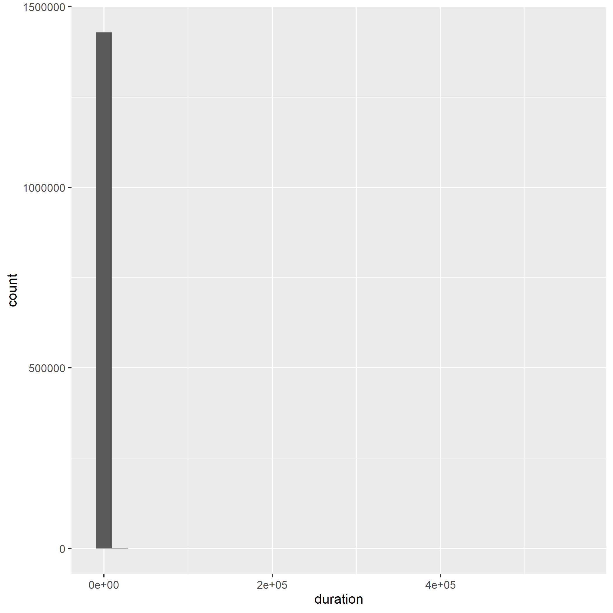
Seems we’ve got a few outliers. Let’s filter everything below 5000 seconds, which is about an hour and twenty minutes.
loc_df %>%
filter(duration < 2000 & duration > 0) %>%
ggplot(aes(x = duration)) +
theme_minimal() +
geom_density(fill = '#b22222', size = 1)
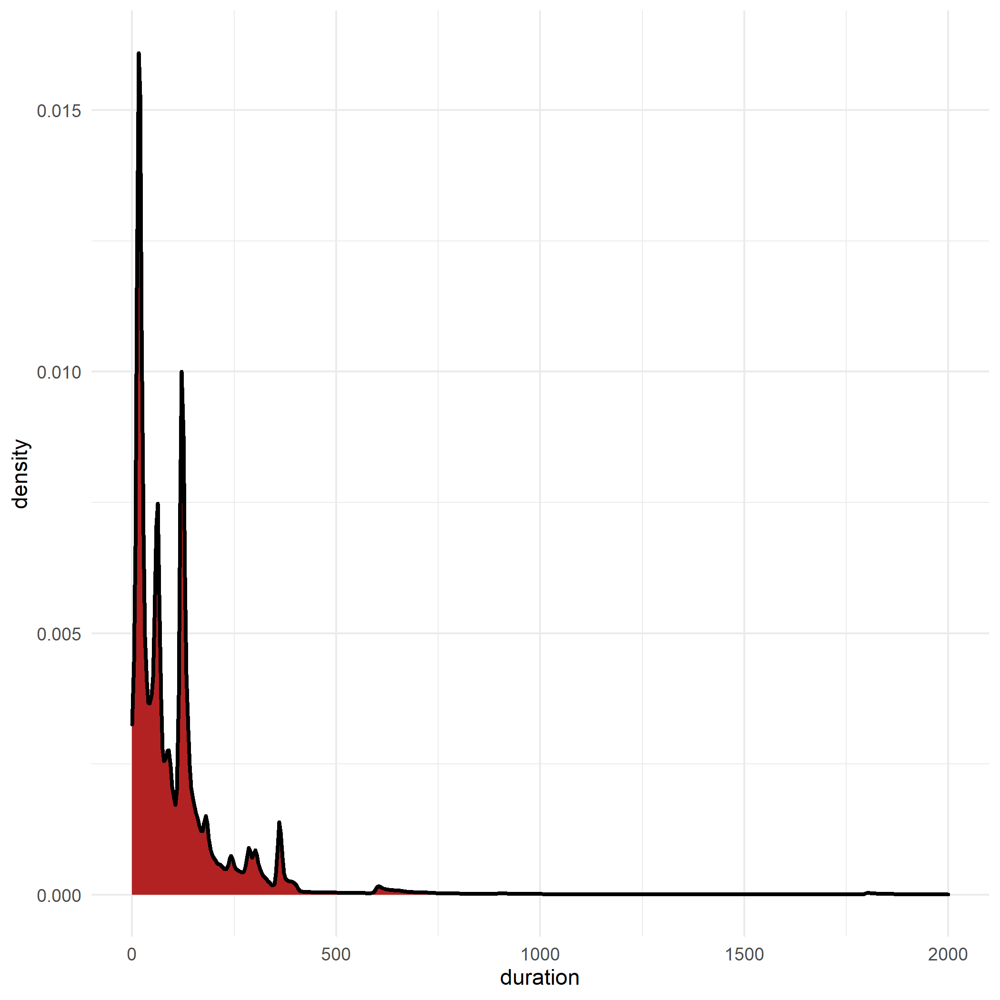
Looks like the vast majority of samples last less than 10 minutes. What would be an ideal sampling rate for this type of analysis, every other minute? Let’s take a look at how many samples last longer than that:
loc_df %>%
mutate(two_minutes = duration <= 120) %>%
count(two_minutes) %>%
mutate(percent = n/sum(n) * 100) %>%
ggplot(aes(x = two_minutes, y = percent)) +
theme_minimal() +
geom_hline(yintercept = 50) +
geom_col(fill = 'white', color = 'black', size = 1) +
expand_limits(y = 100)
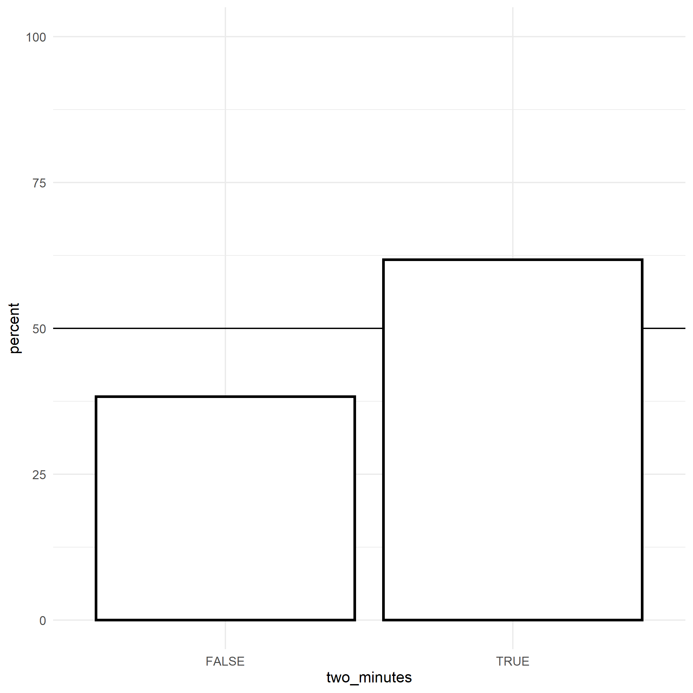
About 55%! So we know that over half of our samples last less than two minutes, and that the vast majority of them last less than ten minutes. These samples span the course of six years, so I’m comfortable using those durations to calculate things.
Travel Modes Revisited ¶
Let’s revisit travel modes, now that we know about durations. I expect things will look more or less similar, since durations seem to clump together around the two minute mark.
loc_df %>%
filter(timestamp > ymd('2018-01-01') & duration > 0) %>%
filter(!is.na(type) & !(type %in% c('STILL', 'TILTING'))) %>%
group_by(type) %>%
summarize(Time = sum(duration)) %>%
ggplot(aes(x = type, y = Time)) +
theme_minimal() +
geom_col(color = 'black', fill = 'white', size = 1) +
ylab('Time (seconds)') +
xlab('Mode') +
ggtitle('Mode share since 2018')
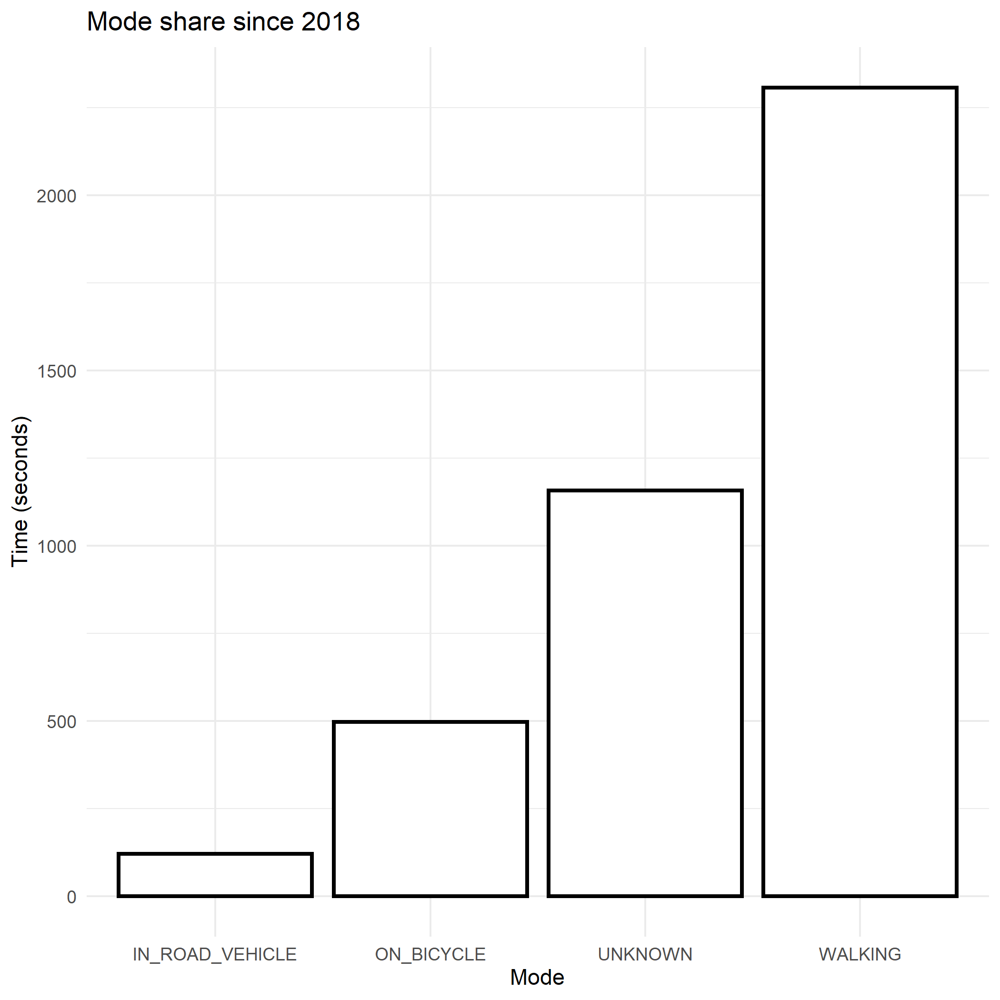
The total time covered by these samples is only about an hour! Clearly, Google mostly does not know what type of transportation I’m using, even accounting for the fact that most of the samples are “STILL”, which is filtered here.
Final Plot ¶
I think for my final final plot, I’d like to make a choropleth map of what neighborhoods I spend the most time in. For this, we’ll need shape files for Portland’s neighborhoods. I’ll just use the data since I graduated college, both because that would vastly skew the data to Reed, and also because the sampling rate stabilizes quite a bit after 2015.
Geography ¶
I’ve downloaded data from Portland’s GIS team, and now I should be able to load it all up to get a map of the neighborhoods.
library(sf)
library(sp)
library(ggmap)
library(maps)
library(ggspatial)
nhoods <- st_read('./Neighborhoods_(Regions)')
river <- st_read('./Willamette_Columbia_River_Ordinary_High_Water')
nhoods %>%
ggplot() +
geom_sf(fill = '#F7F6C5') +
geom_sf(data=river, fill="#3f90df", size=0.0) +
theme_minimal()
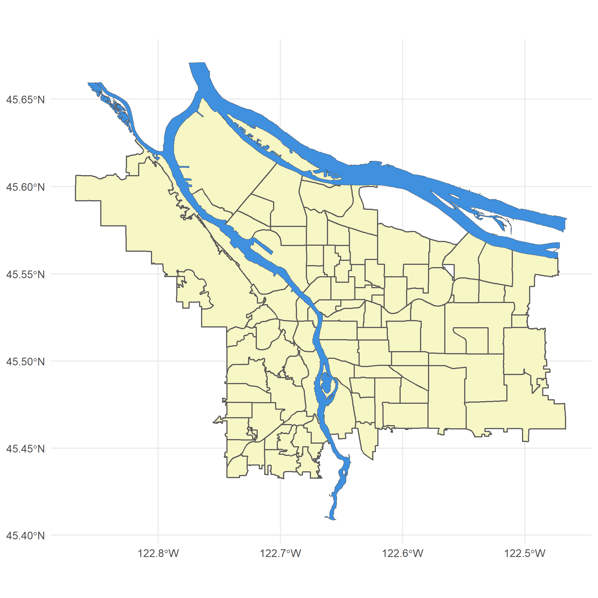
Wonderful, so I’ve got that working. Next, the Google lat/long data actually had the titles “LatitudeE7” and “LongitudeE7”, which explains why they’re such huge numbers.
loc_df <- loc_df %>%
mutate(lat = lat/1e7, lon = lon/1e7)
sample_matrix <- matrix(data = c(loc_df$lat, loc_df$lon), ncol = 2)
sample_shape <- st_multipoint(x = sample_matrix)
I recognize the approximate lat/lon as being around Portland, so that’s a good sign. To take out any errors or vacations, I’ll filter all the data to be approximately in Portland.
portland_df <- loc_df %>%
filter(lat > 45.47 & lat < 45.61 & lon > -122.8 & lon < -122.5)
portland_latlon <- portland_df%>%
select(lon, lat)
ploc_project <- sf_project(st_crs(4326), st_crs(3857), portland_latlon)
portland_df$lon = ploc_project[,1]
portland_df$lat = ploc_project[,2]
nhoods %>%
ggplot() +
geom_sf(fill = '#F7F6C5') +
geom_sf(data=river, fill="#3f90df", size=0.0) +
geom_point(data = head(portland_df, n = 100000), aes(x = lon, y = lat))
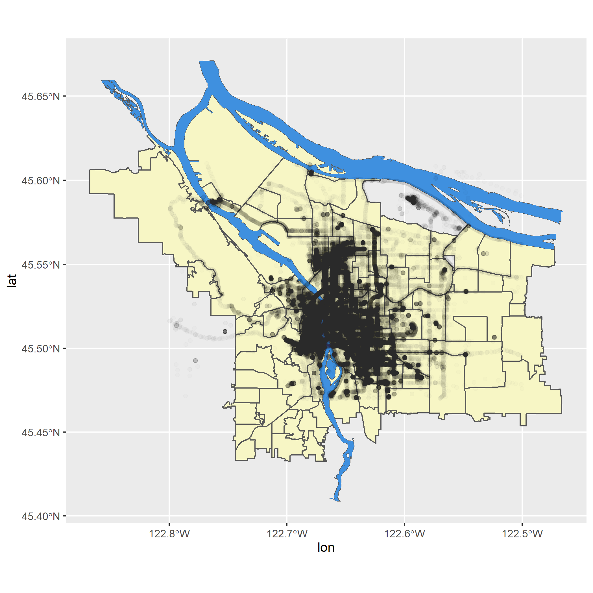
OK! Now we’re getting somewhere. I still want to make the choropleth, but something I like about this representation is that you can see bike routes I prefer, where freeways are, etc. Anyway, now I need to find which points are inside which polygons.
pnts <- select(portland_df, lat, lon)
pnts_sf <- st_as_sf(pnts, coords = c('lon', 'lat'), crs = st_crs(nhoods))
pnts <- pnts_sf %>% mutate(intersection = st_intersects(geometry, nhoods)) %>%
unnest(intersection) %>%
mutate(NAME = nhoods$NAME[intersection])
Now that we know which points belong in which polygons, it’s a simple matter to get the counts of points into the shapefile, at which point we should be able to fill the neighborhoods in proportion to how many samples have been there. Ideally we’d do it by duration, but I am not sure that’s all that much more accurate than assuming that the duration of points are equally and randomly distributred.
counted <- pnts %>%
count(NAME)
counted_tibble <- tibble(NAME = counted$NAME, n = counted$n)
left_join(nhoods, counted_tibble) %>%
ggplot() +
geom_sf(aes(fill = n)) +
geom_sf(data=river, fill="#3f90df", size=0.0)
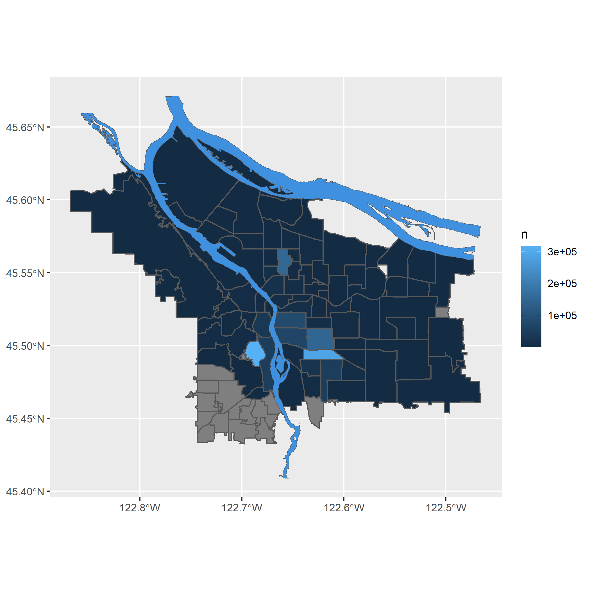
A few things: we need to control for the area of each neighborhood, and then figure out a good scale for displaying things.
counted_nhoods <- left_join(nhoods, counted_tibble) %>%
mutate(adj_counts = n/Shape_Area * 1000)
breaks = c(0, 2, 4, 6, 8, 10, 100)
counted_nhoods$disc_counts <- cut(counted_nhoods$adj_counts, breaks = breaks, include.lowest = TRUE)
counted_nhoods %>%
ggplot() +
theme_void() +
ggtitle("Google knows where you sleep") +
geom_sf(aes(fill = disc_counts)) +
geom_sf(data=river, fill="#3f90df", size=0.0) +
scale_fill_manual(
values = c('#ffffd4','#fed98e','#fe9929','#d95f0e','#993404'),
name = 'Area-normalized location samples'
)
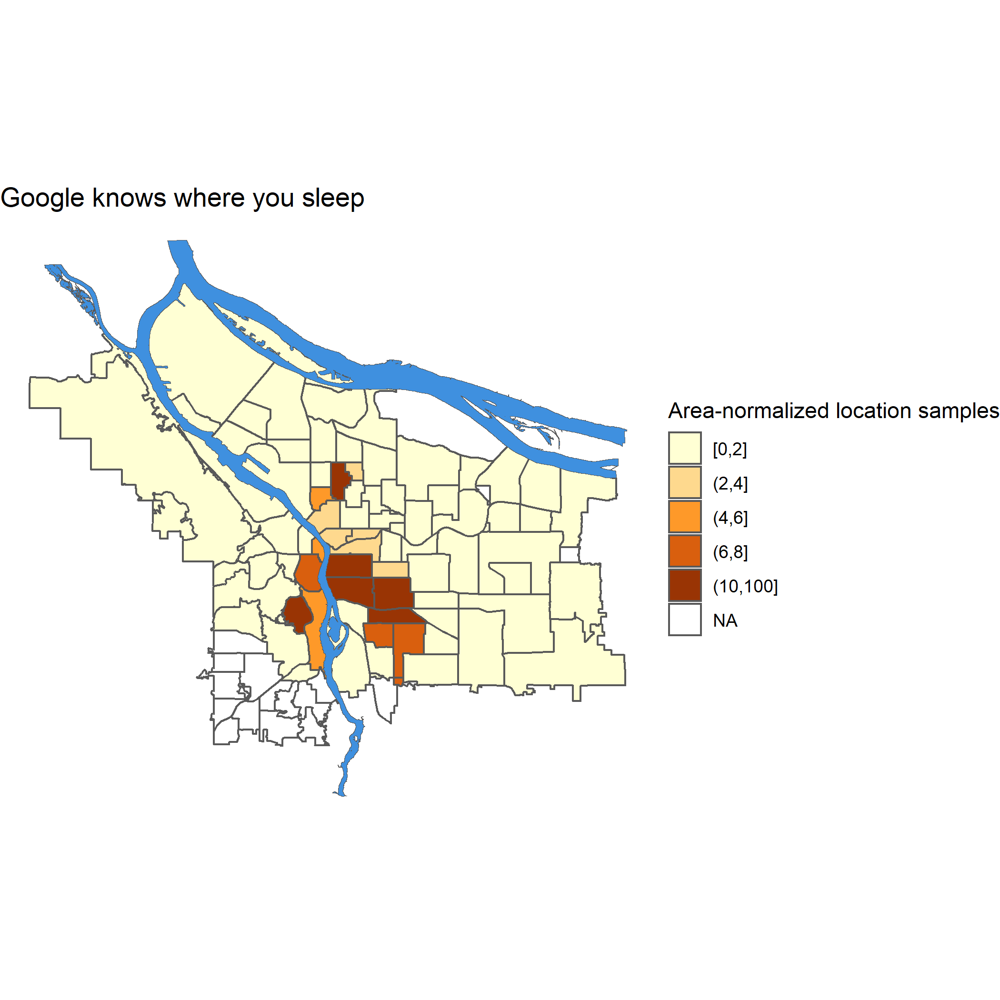
Discussion ¶
This choropleth gives a decent sense of where I have been over the past six years of my life. Darker red neighborhoods represent neighborhoods I have spent more time in, controlling for the area of that neighborhood. Obviously, regions outside Portland are not captured, and we could investigate specific roads and more. However, a choropleth is intuitive, and I think it would be more striking to my intended audience that watching my dot travel along roads.
Moreover, if you know anything about my history, this map would also tell you more than my physical location — people I’ve dated, places I’ve worked, places I’ve lived. Especially if you had this map for every person on earth, and you resolved them all by time, you could do a lot of correlative inference.
A newbie to this map would be drawn to the red, high-density regions: inner SE Portland and OHSU. They might then investigate the isolated islands in other regions of the map.
I chose a sequential color scheme to highlight that we are comparing the same variable across a discrete color scheme, rather than a divergent or qualitative scheme. Qualitative would have been inappropriate, and divergent would perhaps have been more suited to investigating if there were places I went more or less than average. However, for this map, most of it is highlighted with few counts, so that would not have given much information.
Bonus ¶
The choropleth is nice, but it doesn’t really capture the invasiveness of Google’s data like I wanted. So I made an animation of all the datapoints overlaid on the map of Portland:
plot <- portland_df %>%
ggplot() +
geom_sf(data = nhoods, fill = '#F7F6C5') +
geom_sf(data=river, fill="#3f90df", size=0.0) +
geom_path(aes(x = lon, y = lat)) +
theme_void()
anim <- plot +
transition_time(timestamp) +
labs(title = "{frame_time}") +
shadow_wake(wake_length = 0.01)
anim_complete <- animate(anim, fps = 30, nframes = 120*30)
anim_save('since_college.gif', anim_complete)
This took ages to process, but once it was done, the result is quite striking:

I think this actually does the best job of any of these plots at conveying just how much information Google has on us. You can watch me move, go to work, move again, go for long bike rides, the list goes on. And imagine knowing this path information for everybody, and having their email, and having their texts, and their shopping habits, and their searches, and, and, and… You could infer some really insidious stuff! There are a few bugs where the whole path moves somewhere it probably shouldn’t be — perhaps because there are frames with no data? But it’s still quite a detailed picture of my life.